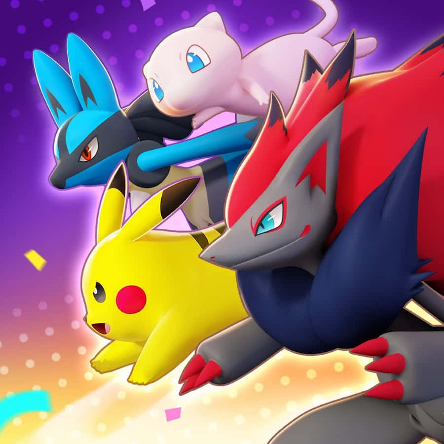
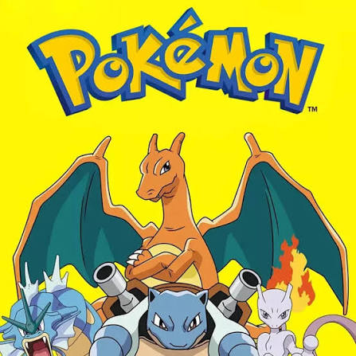

História do pikachu
História do pokemon do ash
Ash começa sua jornada aos 10 anos com Pikachu, ash viaja por várias regiões acumulando insígnias e derrotasaté se tornar Campeão de Alola e, por fim, vence o torneio mundial ao derrotar Leon.
A primeira versão
A primeira oportunidade de capturar um Pokémon surgiu originalmente em 1996, com o lançamento dos jogos primordiais da franquia


Apesar de ter viajado por mais de 25 anos na vida real, Ash continuou tendo 10 anos de idade durante toda a sua jornada, um dos memes e mistérios mais famosos da história dos animes.
Primeiro pokemon
Ash ganha um Pikachu teimoso que não o obedecia, mas a amizade deles nasce para sempre quando Ash se arrisca para salvá-lo de um bando de Spearow.